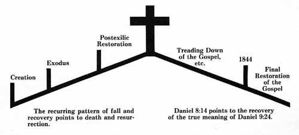

Preface
This syllabus has been prepared particularly for students of Adventism. Much of it reviews vital aspects of our pioneer era. It examines Adventist roots. We must understand our past if we are to understand our present. We cannot properly review the doctrine of "the investigative judgment" unless we understand its development within the Advent body. Nor can we see how "spiritual gifts" should function today unless we know how they functioned in the formative years of Seventh-day Adventism.
Introduction
Why a Re-Examination of 1844?
 The doctrine of "the investigative judgment" as based on the early Adventist pioneer's interpretation of Daniel 8:14 is said by some to be Seventh-day Adventism's one unique contribution to Christian theology. The Advent Movement has its historic roots in its attempt to properly understand Daniel 8:14. What is the impact of this teaching on the "2300 days" of Daniel 8 inside and outside Adventism after the lapse of nearly one and a half centuries?
The doctrine of "the investigative judgment" as based on the early Adventist pioneer's interpretation of Daniel 8:14 is said by some to be Seventh-day Adventism's one unique contribution to Christian theology. The Advent Movement has its historic roots in its attempt to properly understand Daniel 8:14. What is the impact of this teaching on the "2300 days" of Daniel 8 inside and outside Adventism after the lapse of nearly one and a half centuries?
Within Adventism there is considerable uncertainty on some very basic issues. There are leading Adventist scholars who now think that the traditional view of the Adventist doctrine of the investigative judgment is not demonstrable from the Bible but rests on an inspired reinterpretation given in these last days through Ellen G. White.
Raymond F. Cottrell and Don F. Neufeld have been espousing this position for over twenty-five years. It is difficult to know how many other scholars today share this view. Certainly the average Adventist is content to read this teaching in "the Spirit of Prophecy"—satisfied that this is what the Bible teaches. Very few, however, would be comfortable trying to prove the investigative judgment from the Bible—especially to nonAdventist Christians knowledgeable in the Scriptures. But we need to take Cottrell and Neufeld's position seriously. If the doctrine does not rest upon a plain "Thus saith the Bible" but on a "Thus saith Ellen G. White," we ought to openly acknowledge this to the world and especially to the rest of the Christian church. But it is also clear that many in Adventism would not be happy with such a solution.
There are other scholars who also feel that the 1844 doctrine is not demonstrable from the Bible and who have quietly abandoned belief in this teaching. We could easily mention the chairmen of theology departments and other prominent scholars who have lost faith in this distinctive Adventist doctrine. Since they obviously wish to keep their convictions to themselves, we will not mention their names. However, these are the facts, and anyone who knows what is transpiring in Adventism is fully aware that this loss of faith in 1844 has taken place.
Many evangelists are no longer comfortable preaching the investigative judgment. One confessed, "When my evidence is weak, I shout. But when I come to the investigative-judgment doctrine, I nearly scream!" Those who have to present the traditional explanations to people "outside" the faith are most sensitive to the problem. There is a widespread feeling that our case for 1844 and our explanation of it are no longer convincing or perhaps no longer viable. A large percentage of Adventists in Europe have long considered 1844 as a peculiar American aberration.
Recently we have met Adventist ministers and teachers on several continents who have anxiously asked, "What are we going to do about 1844?" This very critical situation has not developed overnight. For many years problems involving the traditional interpretation have been shelved.
Many, of course, remain faithful believers in the traditional view. But even among these this one unique theological doctrine receives very little attention. Who is preaching it with any conviction? Who is preaching it with any effect? It is scarcely ever discussed at institutions like Andrews University. The doctrine is more like an Adventist relic, preserved in the Adventist theological treasure chest and examined only on sentimental or nostalgic occasions.
Now let us consider the impact that this distinctive sanctuary message is having on the Christian church. Anyone can investigate the literature on historical theology and on current issues that have stirred the minds of the church's leading thinkers. But Adventism's theological position on the sanctuary is not so much as mentioned in a footnote. This is not the result of prejudice, because significant heresies are discussed in these volumes on Christian thought. Apparently the scholars do not even think that the Adventist doctrine is a significant heresy.
Throughout its entire history Adventism has not produced one credible commentary on the book of Hebrews—although the sanctuary is supposed to be its special doctrine. Is not Adventism supposed to be the Elijah of the last days to challenge the Christian church? After 135 years the total impact of Adventism's judgment-hour message is negligible. No one is listening. Someone may say, "It was the same when Noah was rejected." But at least Noah had a good hearing!
Not long ago a leading Adventist minister and scholar in the United States said, "When I have to mix with other scholars, I feel comfortable talking about such things as law and grace. But I would be embarrassed to talk about 1844 and the investigative judgment."
We have come to a dangerous and unhealthy situation—for this is no side issue. It touches the very heart of Adventism's historic roots. We have been urged to review the whole matter of 1844 by thinking ministers, teachers and laymen of the movement on every continent in the world. This should have been done by others—but the matter has been tabled again and again.
This is our second edition of 1844 Re-Examined, and we are encouraged by the wide welcome our first edition has received. We do not claim to have all the answers on the problem of 1844. We think we have some. It is our purpose to make a contribution to profitable dialogue. We hope others will respond in a way that will sharpen our own thinking. And we earnestly appeal for a corporate investigation and re-evaluation of the whole question of 1844 to be conducted on a high plane of Christian courtesy and maturity.
What Is Our Central Thesis?
Rather than asking the reader to search through this entire syllabus before learning what our central thesis is, we will state it here as briefly and plainly as possible. If it is truth, it will be self-attesting, and discussion and examination will only make it all the more self-evident.
Out of the great Advent Awakening of the nineteenth century, the pioneers of Seventh-day Adventism arrived at three very basic convictions about the 1844 era:
1. It was the era of the last days.
2. Christ had entered the most holy place.
3. The hour of the judgment had come.
We want to make clear at the outset that we subscribe to these basic affirmations. The pioneers, however, seemed to think that in the preaching of these things, they were called to present something no one had ever preached before. But the New Testament evidence shows that the apostles shared identical convictions:
1. They proclaimed their era to be the last days.
2. They proclaimed the entrance of the High Priest into the most holy place.
3. Their gospel proclaimed that "the hour of His judgment is come."
Therefore 1844 should be seen as a restoration of the apostolic situation, not as an innovation. When the New Testament speaks of the "new commandment," it is the kainos (renewed) commandment and not the neos (altogether new) commandment. If the New Testament gospel was the full gospel (Rom. 15:19), and if it was once and for all time given to the church (Jude 3), new features must not be added to it (Gal. 1:6-8). It can only be restored and recovered.
We might state this central thesis another way. The Bible is a record of the great acts of God. There is a discernible pattern in all these acts. The essential features of the Creation story are recapitulated in the Flood and then in the Exodus. The Exodus from Egypt—the Old Testament redemption model—is repeated in principle after the Babylonian Exile. All these Old Testament events are then recapitulated and perfected in the Christ event—for Christ is the new Adam, the new Israel and the antitypical Exodus. All these great acts of the Old Testament foreshadow and point to God's great act of new creation and redemption in Christ.
But this recurring pattern runs through the Christian age too. Adventists have always recognized that 1844 was analogous to the Exodus from Egypt and to the restoration in the exodus from Babylon (rebuilding the sanctuary and the wall of Jerusalem, etc.). However, 1844 is not the great antitype of those Old Testament events. That honor belongs to the Christ event in A.D. 31, as the entire New Testament testifies. Just as the events before Calvary bear the pattern of Calvary (death and resurrection), so do the events after the cross. Everything points either forward or back to the cross.1

Biblical theology is a theology of reciting or rehearsing the great acts of God. God is truly worshiped only when what He has done is rehearsed—re-presented, remembered, recited, reviewed—but not reenacted. In the Old Testament the holy days and feast days were occasions to rehearse the mighty acts of God. But even these Old Testament acts were themselves a rehearsal of God's great act in Christ. The 1844 event was therefore intended to be a rehearsal of the A.D. 31 event. That is what the gospel is—a rehearsal of what God did in the death and resurrection of Christ. God is a good Teacher. His rehearsal in 1844 was so vivid that the past (A.D. 31) became present (1844). And the pioneers, like children in their theological immaturity, must be excused for thinking that the atonement was being made now, that Christ had entered the most holy place now, that the judgment hour had commenced now. For them it was as if the time of the end or last days had just commenced and Christ had just entered for the first time into the most holy place. But 1844 was kainos, not neos.
The pioneers were not wrong in what they affirmed. They were mistaken in what they denied—that the atonement, last days and kingdom of God (judgment) were all inaugurated in the Christ event. They did not understand the eschatology of the New Testament. It seems that no one did in the nineteenth century.
God has winked at the times of our immaturity and ignorance. He has been a good Teacher. Out of our history has come a good framework
—historical, legal and eschatological—in which to preach the apostolic gospel. But we must not make 1844 a competitive salvation-history event in order to maintain our unique identity. We must not rob A.D. 31 of its glory in order to highlight 1844. The "1844" event must not be made to add to, much less to run competition with, A.D. 31. We must repent for running roughshod over the New Testament in order to prove something unique about 1844.
Daniel 8:14 points to a restoration of the apostolic gospel. It is a rehearsal of Daniel 9:24. We must not childishly reduce our understanding of Daniel 8:14 to a salvation by knowledge of celestial geography. According to the plainest New Testament witness, the mercy seat in the most holy place is the cross of Christ. When we look into the most holy place, we are to see the most holy place of the gospel — the unveiled meaning of Calvary, which justifies the believing sinner and at the same time justifies God and honors His holy law (Rom. 3:25, 26, 31).
In malice may we be children, but in understanding is it not time
that we be adults?
Come, let us reason together.
———————————————
1. See our publication, The Pattern of Redemptive History, which is designed to accompany this syllabus.